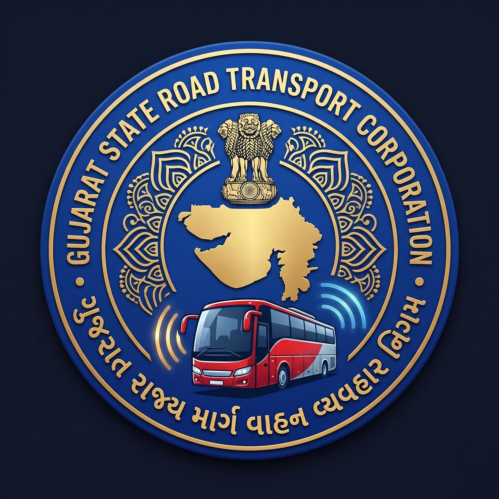

Nearby station
Search Bus
Time Table
Track My Bus
←
Routes
✕
⇅
✕
All Types
Express
Volvo 2x2
Luxury
07:30 PM
08:00 AM
12:15 PM
05:45 PM
Date of Journey
Search Bus
Quick Select Routes:
Vijapur → Surat
Ahmedabad → Navsari
Sachivalay → Bavla
Valsad → Ahmedabad
Ahmedabad → Rajkot
Surat → Dwarka
←
Route Covering Your Location
←
Route Details
Vijapur to Surat
Bus No: GJ-18-Z-7899
Type: Express
Running
Km
343.82
Distance
Hr
06:15:00
Time
Station
Map